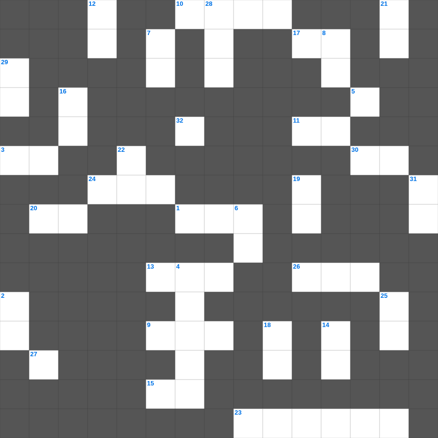

이사야 마스터 100 (1/2)
📌 서비스 정의
십자가로세로는 교회 주보와 주일학교에서 사용할 수 있는 성경 기반 가로세로 퍼즐 서비스입니다. 성경 인물, 사건, 핵심 구절을 바탕으로 제작되었습니다. 온라인 풀이 및 인쇄 기능을 제공합니다.
📖 이사야란?
이사야는 유다 왕국의 멸망 위기 속에서 심판과 회복, 그리고 메시아의 오심을 예언한 책으로, 신약에서 가장 많이 인용되는 예언서 중 하나입니다.
📚 이사야의 주요 사건·주제
이사야의 소명(이사야 6장) · 임마누엘 예언 · 고난받는 종의 노래(이사야 53장) · 바벨론 멸망 예언 · 새 하늘과 새 땅 예언
이사야의 말씀을 퀴즈로 배우는 이사야 주일학교 퀴즈입니다. 가로 힌트와 세로 힌트를 보고 35개의 단어를 맞춰보세요. 인쇄도 가능하고 정답 확인도 바로 되니 소그룹 모임이나 가정 예배 시간에도 활용하실 수 있습니다.

📝 가로 힌트
1. 요엘서에서 재앙의 도구로 쓰인 곤충
2. 보라 주께서 그 수만의 거룩한 자와 함께 이것하셨나니
3. 하나님을 모르는 자들과 우리 주 예수의 복음에 이것하지 않는 자들에게 형벌을 내리시리니
5. 바울이 데살로니가에서 밤낮으로 일한 목적: 스스로 이것이 되기 위해
9. 바울이 고린도전서를 기록한 장소 (3차 선교 여행 중)
10. 너희는 자유의 율법대로 심판 받을 자처럼 말도 하고 이것도 하라
11. 방언은 믿지 아니하는 자들을 위한 이것이요 예언은 믿는 자들을 위함이라
13. 그러나 요나가 여호와의 얼굴을 피하려고 일어나 이것으로 도망하려 하여
15. 요한이서의 발신자: 자신을 '이것'이라 칭함
17. 여호와께서 아미대의 아들 이것에게 말씀하시니라
20. 사람이 마땅히 우리를 그리스도의 일꾼이요 하나님의 이것을 맡은 자로 여길지어다
23. 호세아 11장에 나타난 하나님의 사랑의 성격
24. 고린도전서 13장의 별명
26. 바울과 함께 문안 인사를 전하는 형제
27. 이는 성도를 온전하게 하여 봉사의 일을 하게 하며 그리스도의 이것을 세우려 하심이라
30. 바울이 오네시모를 빌레몬에게 돌려보낼 때 한 행동
📝 세로 힌트
2. 베드로후서 1장 14절: 내 장막을 벗어날 날이 이것한 줄을 앎이라
3. 베드로전서 3장 9절: 악을 악으로 갚지 말고 도리어 이것을 빌라
4. 예수 그리스도의 종이며 사도인 이 사람: 동일하게 보배로운 믿음을 우리와 함께 받은 자들에게 편지함
5. 범사에 네 자신이 선한 일의 이것이 되며 교훈에 부패하지 아니함과 정중함과
6. 성찬식의 제정: 이것은 너희를 위하는 내 몸이니 이것을 행하여 나를 이것하라
7. 누룩 없는 떡이 되기 위해 버려야 할 것: 묵은 이것
8. 하나님 앞과 살아 있는 자와 죽은 자를 심판하실 그리스도 예수 앞에서 그가 나타나실 것과 그의 이것을 두고 엄히 명하노니
12. 우리 주 예수 그리스도의 은혜와 그를 아는 이것에서 자라 가라
14. 열두 제자를 파송하며 하신 말씀: 아무것도 가지지 말라 지팡이나 이것이나 양식이나 돈이나
16. 그들이 바른 길을 떠나 미혹되어 이 사람의 길을 따르는도다 그는 불의의 삯을 사랑하다가
18. 헤롯이 세례 요한의 머리를 무엇에 담아 소반에 가져왔나
19. 야고보서의 장 수
21. 그러므로 너희에게 구하노니 너희를 위한 나의 여러 환난에 대하여 이것하지 말라 이는 너희의 영광이니라
22. 이 세상이나 세상에 있는 것들을 이것하지 말라
25. 디도서 1장 15절: 이것과 양심이 더러운지라
28. 너희 중에 누구든지 지혜가 부족하거든 모든 사람에게 후히 주시고 꾸짖지 아니하시는 누구에게 구하라
29. 베드로후서 1장 9절: 신령한 덕목이 없는 자는 멀리 보지 못하는 이 사람
31. 누가 지혜가 있어 이런 일을 깨달으며 누가 이것이 있어 이런 일을 알겠느냐
32. 모든 사람이 이것을 범하였으매 하나님의 영광에 이르지 못하더니
🧩 이 퍼즐에서 배우는 내용
이 퍼즐은 이사야 마스터 100 (1/2)의 핵심 단어와 개념을 자연스럽게 복습할 수 있도록 구성되었습니다. 주일학교 수업이나 개인 성경공부에서 학습 내용을 점검하는 용도로 바로 활용할 수 있습니다.
🧑🏫 교회 교육 자료 활용
이 퍼즐은 주일학교 교재 추천 자료로 활용할 수 있고, 주일학교 주보에 넣기 좋은 분량으로 구성되어 있습니다. 수업용 주일학교 교안에 활동지로 붙이거나, 예배 후 복습용 주일학교 공과교재로 바로 사용할 수 있습니다.
🏷️ 키워드
이사야 주일학교 퀴즈, 이사야, 십자가로세로, 성경퀴즈, 말씀퀴즈, 가로세로퍼즐, 주일학교 교재 추천, 주일학교 주보, 주일학교 교안, 주일학교 공과교재